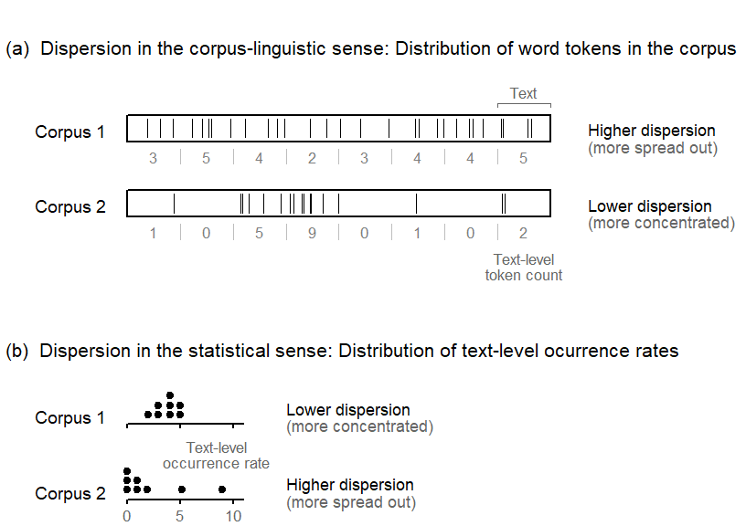

![]()
library(lattice)Warning: Paket 'lattice' wurde unter R Version 4.2.3 erstelltsource("C:/Users/ba4rh5/Work Folders/My Files/R projects/my_utils.R")Warning: Paket 'gridExtra' wurde unter R Version 4.2.3 erstelltWe start by loading the lattice package:
library(lattice)Warning: Paket 'lattice' wurde unter R Version 4.2.3 erstelltsource("C:/Users/ba4rh5/Work Folders/My Files/R projects/my_utils.R")Warning: Paket 'gridExtra' wurde unter R Version 4.2.3 erstelltThis code reproduces Figure 1 (in the preprint) and saves it as a PDF file, in the folder “figures”.
n_tokens_A <- c(3,5,4,2,3,4,4,5)
n_tokens_B <- c(1,0,5,9,0,1,0,2)
n_texts <- length(n_tokens_A)
A_loc <- rep(1:n_texts, n_tokens_A)+runif(sum(n_tokens_A))
B_loc <- rep((1:n_texts)[n_tokens_B!=0], n_tokens_B[n_tokens_B!=0])+runif(sum(n_tokens_B))
p1 <- xyplot(1~1, type="n", xlim=c(-1,12.5), ylim=c(0,6.5),
par.settings=my_settings, scales=list(draw=F), xlab="", ylab="",
panel=function(...){
panel.segments(x0=2:n_texts, x1=2:n_texts, y0=4.45, y1=4.65, col="grey", lwd=.5)
panel.rect(xleft=1, xright=n_texts+1, ytop=5.1, ybottom=4.75, border=1, col="white", lwd=1)
panel.segments(x0=A_loc,
x1=A_loc, y0=4.8, y1=5.05, lwd=.75)
panel.text(x=(1:n_texts)+.5, y=4.55, label=n_tokens_A, col="grey50", cex=.8)
panel.segments(x0=2:n_texts, x1=2:n_texts, y0=3.45, y1=3.65, col="grey", lwd=.5)
panel.rect(xleft=1, xright=n_texts+1, ytop=4.1, ybottom=3.75, border=1, col="white", lwd=1)
panel.segments(x0=B_loc,
x1=B_loc, y0=3.8, y1=4.05, lwd=.75)
panel.text(x=(1:n_texts)+.5, y=3.55, label=n_tokens_B, col="grey50", cex=.8)
panel.dotdiagram(1+(n_tokens_A/5), y_anchor=1, scale_y=.125, set_cex=1.3)
panel.dotdiagram(1+(n_tokens_B/5), y_anchor=0, scale_y=.125, set_cex=1.3)
panel.segments(x0=1, x1=3.2, y0=1, y1=1)
panel.segments(x0=1, x1=3.2, y0=0, y1=0)
panel.segments(x0=1+c(0,5,10)/5, x1=1+c(0,5,10)/5, y0=1, y1=.95)
panel.segments(x0=1+c(0,5,10)/5, x1=1+c(0,5,10)/5, y0=0, y1=-.05)
panel.text(x=1+c(0,5,10)/5, y=-.2, label=c(0,5,10), col="grey40", cex=.8)
panel.text(x=.6, y=c(4,5)-.1, label=c("Corpus 2", "Corpus 1"), adj=1, cex=.9)
panel.text(x=.6, y=c(0,1)+.1, label=c("Corpus 2", "Corpus 1"), adj=1, cex=.9)
panel.text(x=-1.3, y=6, label="(a) Dispersion in the corpus-linguistic sense: Distribution of word tokens in the corpus", adj=0, cex=1)
panel.text(x=-1.3, y=2, label="(b) Dispersion in the statistical sense: Distribution of text-level ocurrence rates", adj=0, cex=1)
panel.text(x=9.7, y=c(3.8, 4.8), adj=0, label=c("Lower dispersion\n", "Higher dispersion\n"), col=1, lineheight=.85, cex=.85)
panel.text(x=4, y=c(0.1 ,1.1), adj=0, label=c("Higher dispersion\n", "Lower dispersion\n"), col=1, lineheight=.85, cex=.85)
panel.text(x=9.7, y=c(3.8, 4.8), adj=0, label=c("\n(more concentrated)", "\n(more spread out)"), col="grey40", lineheight=.85, cex=.85)
panel.text(x=4, y=c(0.1 ,1.1), adj=0, label=c("\n(more spread out)", "\n(more concentrated)"), col="grey40", lineheight=.85, cex=.85)
panel.segments(x0=8, x1=9, y0=5.25, y1=5.25, lwd=.5, col="grey40")
panel.segments(x0=8:9, x1=8:9, y0=5.25, y1=5.2, lwd=.5, col="grey40")
panel.text(x=8.5, y=5.4, label="Text", col="grey40", cex=.8)
panel.text(x=8.5, y=3.1, label="Text-level\ntoken count", col="grey40", cex=.8, lineheight=.85)
panel.text(x=2.7, y=.6, label="Text-level\noccurrence rate", col="grey40", cex=.8, lineheight=.85)
})
p1
@online{sönning2023,
author = {Sönning, Lukas},
title = {“{Dispersion}” in Corpus Linguistics and Statistics},
date = {2023-01-18},
url = {https://lsoenning.github.io/posts/2023-01-18-dispersion_terminology/},
langid = {en}
}